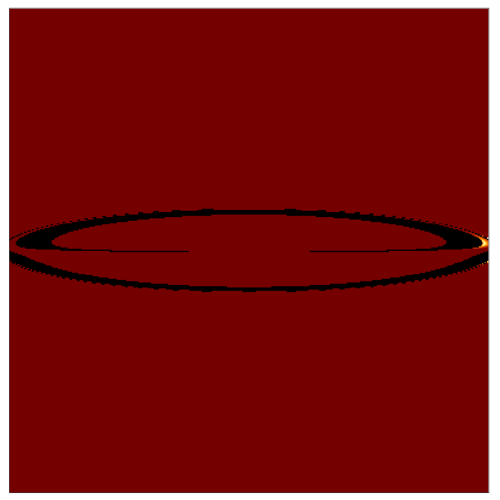

[a] Spin - udává, jak rychle se černá díra otáčí
kolem své osy
[M] Hmotnost - určuje gravitační sílu a velikost
horizontu událostí černé díry
[rin] Vnitřní okraj - Nejbližší
vzdálenost, kde může hmota ještě stabilně obíhat
[rout] Vnější okraj - Nejvzdálenější
bod, kde ještě hmota tvoří disk
[T] - Teplota akrečního disku, která určuje jeho
záření
[r0] Vzdálenost - Odkud pozorovatel
sleduje černou díru a akreční disk.
[θ] Pozorovací úhel - Úhel, pod kterým
pozorovatel vnímá akreční disk černé díry.